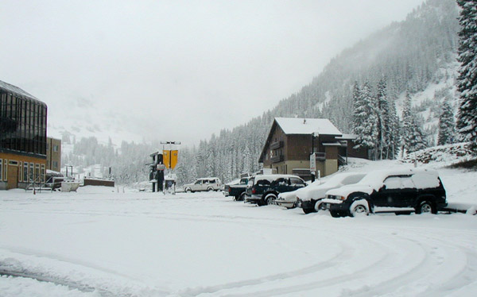
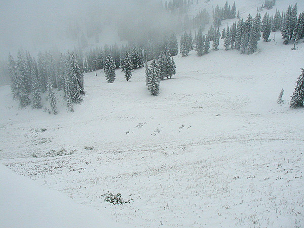
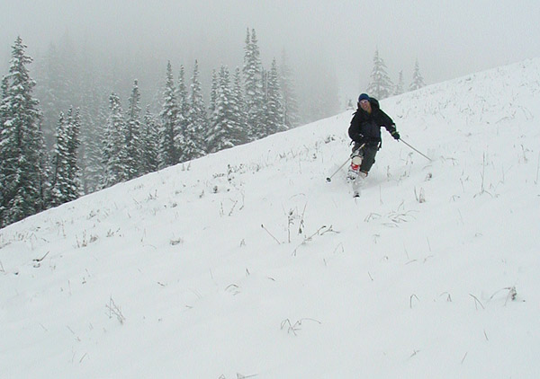
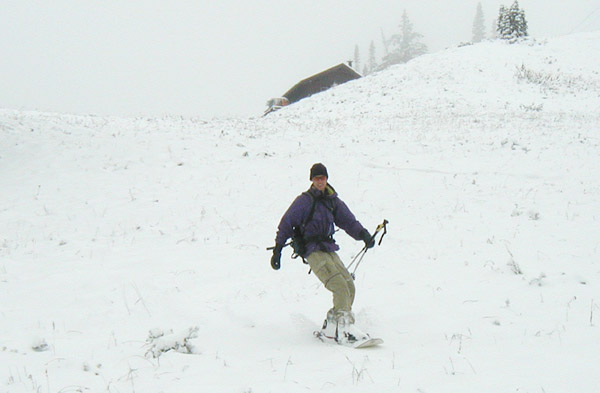
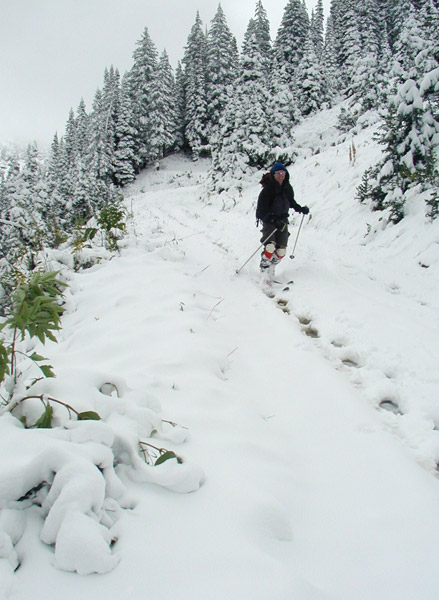

|
Alta Early Season

If you look quickly at this picture,
you might mistake it for any day in the dead of winter. But the
fact that it was taken on the second week of September made it
all the better.

Looking down Alta's run "warm-up" at the tasty 5 inches of snow.
Just enough to cover up the dirt and stout board stopping debris.

You'd have to be crazy to drop a knee on this thin of a snowpack!

Living the dream and snowboarding at Alta. Old snowboards are particulary
useful for going down the mountain when "scraping" is just as
common as "sliding."

Low angles made for the best skiing. The key was to just keep the
boards as flat as possible. Putting any pressure on your edges
would send you scraping along the ground. In this pict the green
foliage is obviously not yet ready for winter.
|